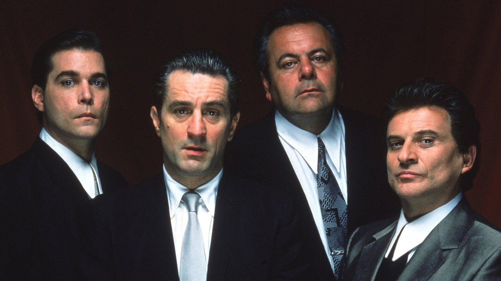
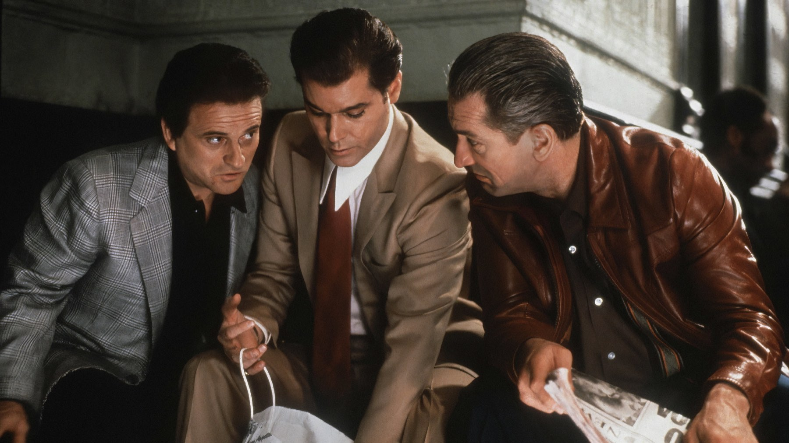
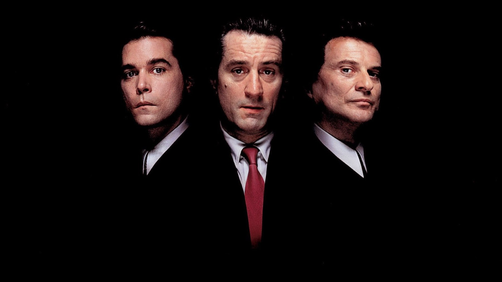

Quei bravi ragazzi (GoodFellas), rivisto oggi
Un gangster vero pagato 480.000 dollari per raccontarsi, sei candidature all'Oscar e un Leone d'argento: perché il film di Scorsese regge ancora
Due settimane prima dell'inizio delle riprese Henry Hill ricevette 480.000 dollari. Non era un attore né un consulente qualunque: era l'uomo la cui vita aveva ispirato il libro Wiseguy, uscito nel 1985 a firma di Nicholas Pileggi, e Martin Scorsese voleva averlo dalla sua parte. Un ex gangster pagato per raccontare come si vive da gangster: già questo basta a spiegare il tono del film, che non guarda il crimine dall'alto in basso, ma dal posto in cui lo si sente come una vita normale.
Da Wiseguy a Quei bravi ragazzi
Il titolo di lavorazione era proprio Wiseguy, come il libro. Fu cambiato per non fare confusione con una serie televisiva, come ricorda la pagina italiana di Wikipedia. Il budget fu di 25 milioni di dollari e l'incasso mondiale arrivò a circa 47,1 milioni, 46,8 dei quali negli Stati Uniti: non un successo travolgente per gli standard di oggi, ma un titolo che ha continuato a vivere in televisione, nei dischi e nelle classifiche dei critici molto più a lungo di quasi tutti i film usciti con lui.
In Italia il film arrivò il 20 settembre 1990, dopo il passaggio a Venezia, dove Scorsese vinse il Leone d'argento per la regia. Il premio veneziano fu uno dei primi segnali che si aveva davanti qualcosa di speciale.

Tre facce e un cast scelto con cura
Robert De Niro, Ray Liotta e Joe Pesci: il trio è quello che il pubblico ricorda, ma dietro c'è un lavoro di casting preciso. Liotta fu scelto dopo che De Niro lo aveva visto in Something Wild, nel 1986: un attore ancora poco noto che qui porta una cosa rara, la faccia di un ragazzo che crede di aver trovato il suo posto nel mondo. Lorraine Bracco, candidata all'Oscar come non protagonista, dà a Karen l'unico sguardo del film che dubita: senza il suo punto di vista, la storia sarebbe solo una festa.
Il momento che tutti citano, però, è di Joe Pesci. La scena in cui Tommy chiede a Henry «in che senso ti faccio ridere?» nasce da un'esperienza reale dell'attore. Scorsese registrò quattro o cinque ciak, riscrisse il dialogo e lo inserì nel copione: una prova di come il film trasformi l'improvvisazione in una struttura. Pesci vinse l'unico Oscar del film, e a noi pare ancora oggi un premio ovvio: la scena fa paura perché non sai mai, nemmeno la seconda volta, da che parte cadrà la battuta.
Il piano sequenza che seduce
La sequenza del Copacabana è il biglietto da visita del film. Henry porta Karen dal retro del locale, tra cucine e corridoi, senza che la macchina da presa stacchi. È una dichiarazione di intenti: chi vive in quel mondo non fa la fila, e noi ci entriamo con lui. La parte più intelligente è che il regista ci fa provare lo stesso fascino che prova Karen, per poi toglierci a poco a poco ogni difesa.
È qui che la nostra tesi sul film diventa netta: Quei bravi ragazzi funziona perché ci fa desiderare quella vita e poi, senza una predica, ce la rende insopportabile. Molti film di mafia venuti dopo hanno imitato la voce fuori campo, il montaggio rapido e le canzoni scelte con cura; quello che non sono riusciti a copiare è il ritmo con cui il piacere si trasforma in ansia, lungo gli anni, mentre la paranoia sostituisce il lusso.
Per noi il punto è che quel movimento di macchina non è una prodezza tecnica fine a sé stessa: fa capire, senza una parola di spiegazione, il rapporto tra Henry e il potere. Oggi, quando i piani sequenza sono spesso un'esibizione, è questo a rendere la scena ancora così preziosa e così difficile da imitare.
Cosa regge e cosa no, oggi
Regge quasi tutto: la regia di Scorsese, il montaggio, le interpretazioni, la capacità di rendere una storia di violenza quasi domestica. Il film ottenne sei candidature all'Oscar, tra cui miglior film, regia, sceneggiatura non originale e montaggio. Roger Ebert gli diede quattro stelle su quattro. Nel 2000 è entrato nel National Film Registry americano e nel sondaggio Sight and Sound del 2022 è 28º tra i registi e 63º tra i critici (a pari merito con Casablanca e Il terzo uomo): due classifiche molto diverse, che raccontano un film amato più da chi il cinema lo fa che da chi lo giudica.
Il punto debole, se proprio vogliamo cercarlo, è la parte finale, volutamente caotica: la fretta, i cambi di scena e la voce che parla senza fiato possono stancare chi cerca una trama lineare. È una scelta di regia coerente con il crollo del protagonista, ma richiede pazienza. E il fascino di quei personaggi è ancora il punto più discutibile: Scorsese non li assolve, ma il film è così bello che a un pubblico distratto il messaggio può sfuggire. Per noi è un merito e un rischio insieme.

Dove vederlo e a chi lo consigliamo
A ottobre 2026 Quei bravi ragazzi è in abbonamento su Sky Go e Now TV e a noleggio su Apple TV Store, Rakuten TV, Amazon Video e CHILI. Lo consigliamo prima di tutto a chi non l'ha mai visto e conosce solo le citazioni: la sorpresa è scoprire quanto sia più leggero e più cattivo di come lo si ricorda. E lo consigliamo a chi lo ha già visto da ragazzo: rivisto da adulti, la seconda metà fa un effetto molto diverso.
Domande frequenti
Quando è uscito Quei bravi ragazzi in Italia?
Il 20 settembre 1990, distribuito da Warner Bros. Italia. Poco prima il film era stato presentato alla Mostra di Venezia, nel settembre 1990.
Quanti Oscar ha vinto GoodFellas?
Uno: Joe Pesci come miglior attore non protagonista. Le candidature erano sei, tra cui miglior film, regia e Lorraine Bracco.
Dove si può vedere in Italia?
A ottobre 2026 in abbonamento su Sky Go e Now TV, a noleggio su Apple TV Store, Rakuten TV, Amazon Video e CHILI.